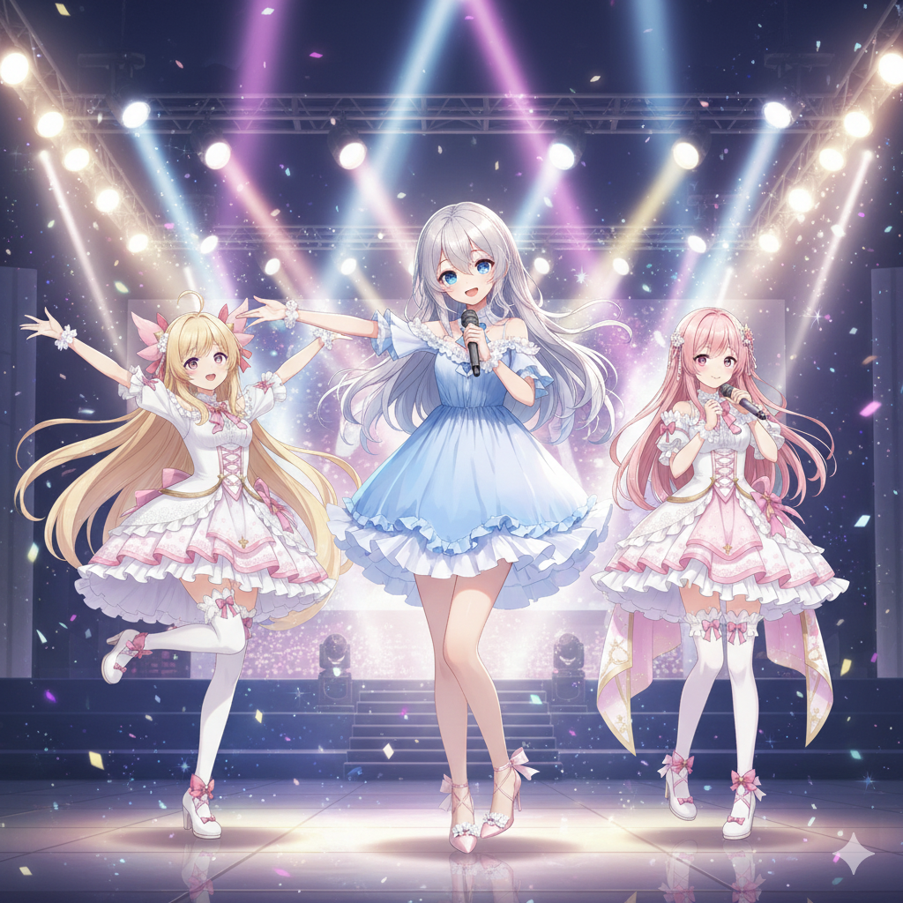

今日は新しいことを足すのではなく、動画づくりの“おうち”を端から端まで大掃除した一日でした。たまっていたちいさなほころびを、まとめてきれいにお直し✨
ルピナス （ふつう）
今日は新しいものを足すんじゃなくて、ずっと気になってた“ほころび”を全部つくろう日にしたよ。
アイリス （びっくり）
えっ、地味じゃない？あたしは新しい派手なやつ作りたい〜！
フィオナ （笑顔）
ふふ、アイリスちゃん。おうちもこまめに掃除しておくと、あとあと楽なのですよ。

🧹 気になっていた“ひっかかり”を端から
動画は、お話づくり → 演出 → 絵と声 → 仕上げ、という長い道のりでできています。今日はその道のりを順番にたどって、「あれ？」と引っかかる小さなところを、ひとつずつ直していきました。
アイリス （考え中）
古いものをずっと残してると、よくないの？
ルピナス （大笑い）
引き出しに入れっぱなしの古いレシート、みたいなものね。あとで“これ何だっけ”ってなるやつ。
フィオナ （ふつう）
古いレシピのメモが台所に貼ってあると、今日の味付けがブレちゃうのと似ていますね。
🎵 BGMが“いつも似た曲”になりがち問題
シリーズで作っていると、なぜか毎回似た雰囲気の曲ばかり選ばれてしまうことがありました。今日はそこを直して、回ごとにちゃんと違う曲がかかるように。聴いていて飽きないって、大事です🎶
アイリス （笑顔）
あー！“この曲さっきも聞いたぞ？”ってツッコまれたことあるかも！
フィオナ （ドヤ顔）
アイリスちゃん、配信のBGMはご自身で選んでいますので、それは趣味の偏りかと…。
ルピナス （呆れ）
……まあそれはそれとして。
🍳 “あれもこれも”を欲ばらない
お話を考えてもらうとき、こちらから渡す情報を欲ばって盛りすぎると、かえって伝わりにくくなる——そんなことに気づいた日でもありました。だから「これだけは伝えたい」に絞るようにしました。
フィオナ （考え中）
献立を聞かれて“冷蔵庫の中身を全部読み上げる”ようなものですね。
ルピナス （ふつう）
そう。“今夜の主役は鶏肉”って絞って伝えた方が、ちゃんとした答えが返ってくるの。
アイリス （あわあわ）
あたし、いつも『あれもこれも参考にして！』って詰め込んでた…！
🧺 ぜんぶ片づいて、すっきり
合わせて、もう使っていない古いものを片づけ場所に移したり、絵の素材まわりを整理したり。一日の終わりには、作業場がすっきり気持ちよくなりました🌙
アイリス （にやり）
つまり今日は“おうちの大掃除”の日だったってこと？
ルピナス （ドヤ顔）
そういうこと。新しい家具を入れる前に、ちゃんとお掃除も終わらせた感じね。
フィオナ （大笑い）
おかげでとても気持ちのいい一日でした。
📝 おわりに
地味な一日に見えて、これからの動画づくりがずっと安定する、大事な大掃除デーでした🌸
アイリス （ウインク）
次は派手なやつ作るからね〜！覚悟しといて！
フィオナ （ふつう）
最新の配信は X（https://x.com/irisfionaAIBS）でお知らせしています。今日も読んでくださってありがとうございました。